Pasteur Gérald Fruhinsholz
5 août 2013
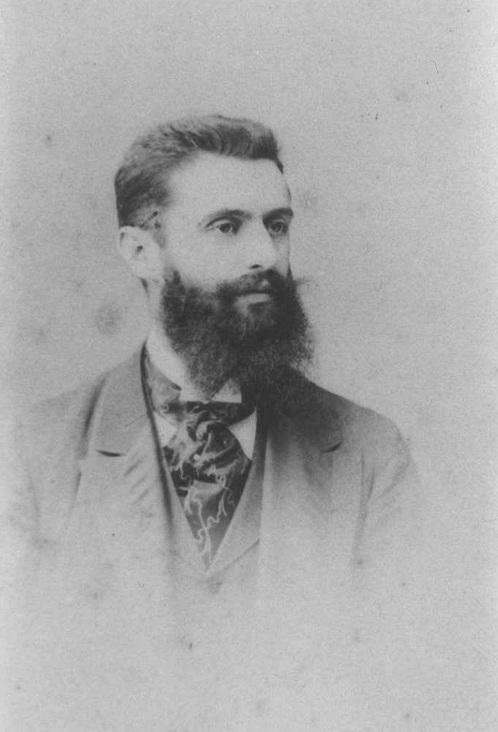
« Dans 5 ans peut-être, dans 50 ans certainement… ».
Ces mots furent ceux de Theodor Herzl devant un parterre de 204 délégués des communautés juives d’Europe centrale, au Premier Congrès sioniste de Bâle, en août 1897.
Par ces mots, Theodor Herzl est devenu le « Prince d’Israël », car, contre toute attente, ces paroles se sont réalisées… Dans son journal, Herzl (1) écrit:
« Si je devais résumer le Congrès de Bâle en un mot, ce serait celui-ci: à Bâle j’ai fondé l’Etat Juif ».
Mais qui sait que Theodor Herzl eut besoin d’un humble chrétien, pour lui faire comprendre que D.ieu avait Sa main sur lui pour la création de l’Etat hébreu et la restauration de Sion, et qui fut utilisé par D.ieu pour lui ouvrir les portes des grands de ce siècle? … Un homme versé dans les Écritures, qui mieux que lui connaissait l’exactitude des temps prophétiques? …
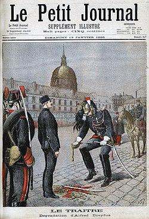
Parlons de Theodor Herzl: il est né en 1860 à Budapest, et mort en 1904.
Journaliste et écrivain juif austro-hongrois, Theodor fonde le mouvement sioniste au congrès de Bâle en 1897; il est l’auteur de Der Judenstaat (« L’État des Juifs ») en 1896. En somme, Theodor Herzl est le prophète des temps modernes en ayant eu la vision d’un Etat capable d’accueillir les Juifs du monde entier. « L’Affaire Dreyfus » en France, symbole d’un antisémitisme violent, a été pour Theodor, le choc décisif.
« Le Prince et le prophète »
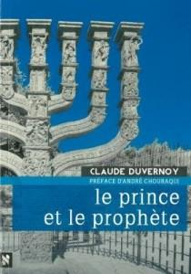
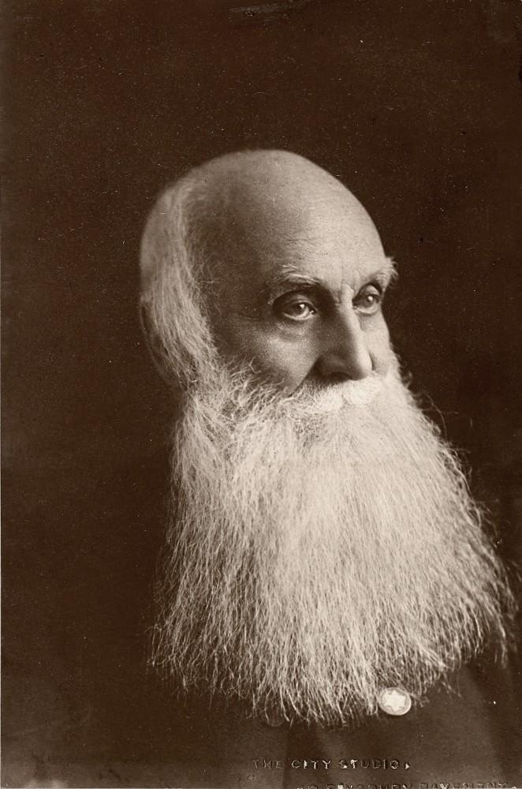
Le livre du pasteur Claude Duvernois est une biographie intéressante, car elle révèle un aspect méconnu de la vie du grand Theodor Herzl. Ce témoignage démontre combien la place d’un chrétien au côté de Herzl fut déterminante.
Le révérend William Hechler était chambellan de Cour, et il put, grâce à ses connaissances personnelles, ouvrir au « Prince d’Israël » les portes des rois.
André Chouraqui, qui préfaça en 1965 le livre du pasteur Duvernois, n’hésite pas à faire la comparaison avec le couple Moïse/Jethro: « Moïse avait eu à ses côtés Jethro, le prêtre de Madian. C’est un chrétien, le chapelain de l’Ambassade britannique à Vienne, qui se dresse à la droite de Herzl et qui, du début à la fin, l’accompagne […] ».
De même, docteur Ali Menjour:
« Hechler avait deviné par sa connaissance de la Bible et par des calculs inspirés, la date de 1897 comme étant la date de « l’aube de la restauration ultime d’Israël ».
Théodore Herzl représentait pour une grande majorité de contemporains et même de rabbins « un dangereux énergumène », mais cet homme choisi de D.ieu fit cette superbe déclaration:
« A Bâle, j’ai fondé l’Etat juif! Si je disais cela à présent je serais accueilli par un éclat de rire universel. Dans 5 ans peut-être, dans 50 ans certainement, la chose sera devenue claire pour tout le monde… ».
Le 29 novembre 1947 lui donna raison – 50 ans après la prédiction d’Herzl, Israël renaissait. La rencontre entre Herzl et Hechler eut lieu en mars 1896:
« Après avoir grimpé quatre étages dans l’immeuble où résidait Hechler, Herzl fut accueilli au son de l’orgue… Tout juste après avoir souhaité la bienvenue au « fils de Sion » comme il se plaisait à qualifier Herzl, le révérend Hechler étala un plan de l’ancien temple de Jérusalem et une immense carte de la Palestine pour expliquer à son hôte le lieu où devait s’ériger le nouveau temple…
Depuis cette rencontre, Hechler n’a pas quitté Herzl et n’a pas hésité un moment à lui ouvrir les portes des chancelleries allemandes et austro-hongroises. Ayant été précepteur à la Cour du Grand-Duc Frédéric de Bade, l’oncle de l’empereur Guillaume II, le révérend Hechler, dont le père était allemand, avait su garder avec son ancien maître des relations pleines de déférence. Ne s’étant jamais servi de ces relations à des fins personnelles, il les a utilisées pour ce qu’il considérait être la cause de son existence ».
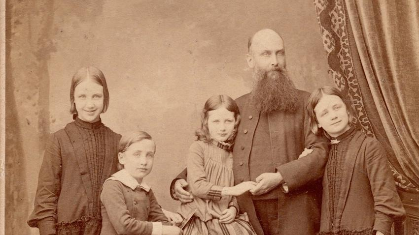
Un homme original mais providentiel
« Selon la Bible, les Juifs doivent retourner en Palestine. Par conséquent, je viens en aide à ce mouvement, en tant que Chrétien pleinement convaincu de la vérité de la Bible. Car cette cause est la cause de Dieu » – révérend William Hechler.
Lisons le témoignage deJerry Klinger, président de la « American Jewish Society for Historic Preservation » (2):
« Le sionisme politique et l’état moderne d’Israël est en grande partie né de la volonté farouche de Theodor Herzl. Mais s’il n’y avait eu un chrétien à ses côtés, Herzl serait resté un obscur écrivain autrichien excentrique. On a pour ce pasteur Hechler qui a été oublié, une vraie dette ».
« Hechler est resté aux côtés de Herzl durant les six années de la lutte infructueuse pour un Etat juif. Quand Herzl était mourant en juillet 1904, Hechler était à son chevet. Theodor Herzl souhaitait que William Hechler soit honoré par le mouvement sioniste, pour tout ce qu’il avait fait pour le peuple juif.
… Hechler est mort dans la misère à Londres, oublié par les hommes, en janvier 1931. La communauté juive de Vienne pensa ériger une statue pour lui en 1934. Mais les ténèbres de la Shoah commençait déjà à se répandre, et la statue fut oubliée. Ce qui est terrible, c’est que William Hechler avait prédit qu’une terrible calamité s’abattrait sur les Juifs, si un Etat juif n’était pas créé… ».
Personnellement, je dois beaucoup à Claude Duvernois. Ce pasteur qui vit de ses yeux en 1967, durant la guerre des Six-jours, la« muraille de feu » divine (Zacharie 2: 5)autour de Jérusalem, sut transmettre avec son livre (il en a écrit de nombreux autres) la vision sioniste.
En tant que chrétien et ami d’Israël, je ne peux que souligner l’importance de ce couple prophétique incarné par Herzl et Hechler.
Claude Duvernois habite près du mont Herzl, et son vœu le plus cher est bien sûr de voir que Theodor Herzl et William Hechler soient enfin réunis dans la Jérusalem qu’ils ont tant aimée.
Que son vœu soit exaucé…
Gérald Fruhinsholz
(1) Venez visiter le musée HERZL au mont Herzl, ça vaut la peine!
(2) « En avril 2010, la Société juive américaine « for the Historic Preservation », a découvert la tombe abandonnée du pasteur Hechler, à Londres. Avec la Communauté chrétienne sioniste de Grande-Bretagne, et avec l’espoir d’un soutien juif, le désir de Herzl pourrait être respecté, si l’on érigeait une pierre tombale qui honore le ministre chrétien qui a rendu Herzl et le Sionisme politique légitime » (J. Klinger).
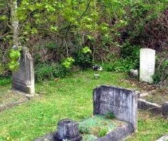
Avril 2010: La Jewish American Society for Historic Preservation (Société juive américaine pour la préservation historique) a découvert la tombe abandonnée et oubliée durant près de 80 ans de William Hechler à Londres.
En coordination avec la communauté chrétienne sioniste britannique et, espérons-le, avec le soutien des Juifs, les souhaits de Herzl seront respectés et au moins une simple pierre tombale sera placée pour honorer le pasteur chrétien qui a légitimé Herzl et le sionisme politique
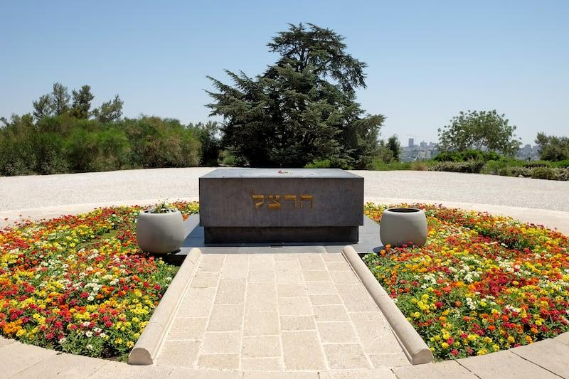
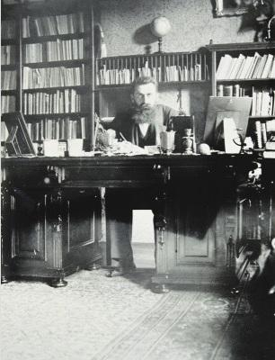
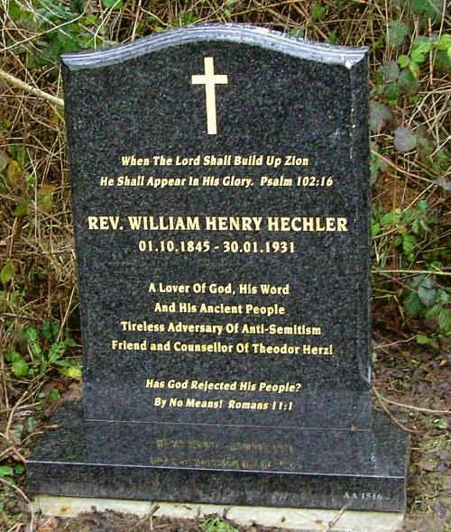
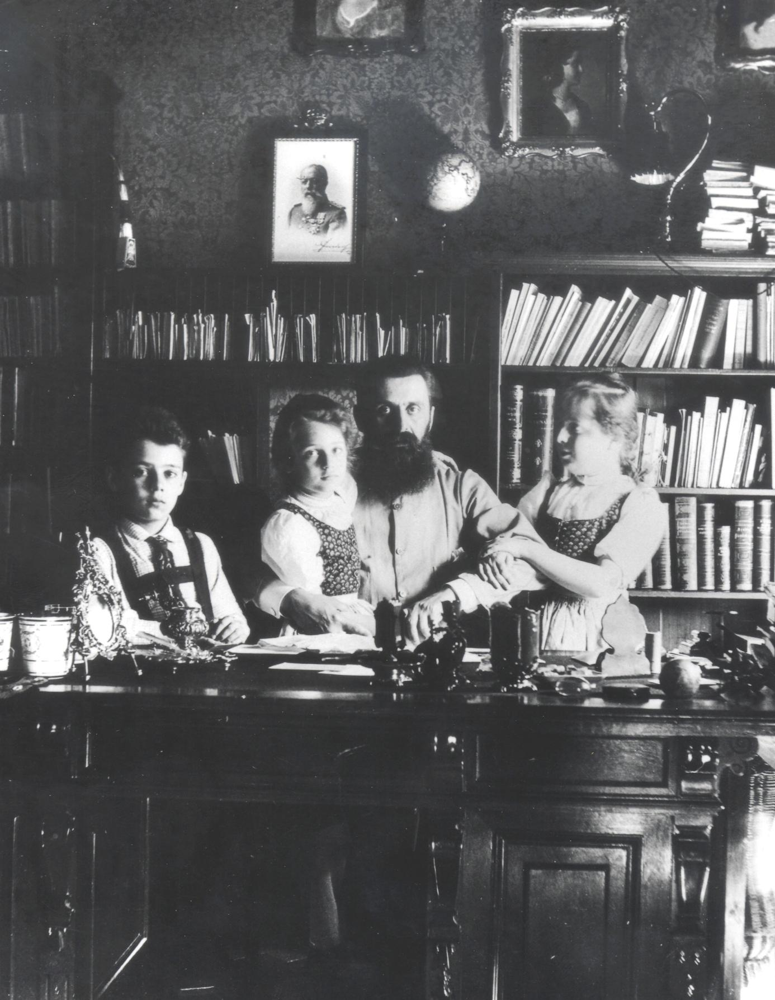
Par Theodor Herzl
Publié dans Die Welt, le 31 décembre 1897
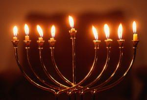
Le récit qu’on lira ci-dessous a été rédigé par Herzl en 1897, et est paru dans le journal du mouvement sioniste Die Welt, le 31 décembre 1897, quelques mois après le Premier Congrès sioniste. Autobiographique, il en dit long sur le parcours du fondateur du sionisme politique, sur son « retour au Judaïsme » concomitant à l’élaboration de son projet politique. On connaît en effet souvent le début du parcours de Théodor Herzl, généralement décrit comme un Juif assimilé, et sa « découverte » du sionisme, concomitante à l’affaire Dreyfus. On connaît beaucoup moins la dimension proprement juive de son cheminement et son retour au Judaïsme.
Herzl a en effet, comme il l’explique lui-même dans ce texte essentiel, fait téchouva, non pas en se mettant à pratiquer les préceptes religieux du Judaïsme, mais en faisant Retour à son peuple et à son identité. Il a aussi décrit dans ses livres le futur Etat d’Israël et le Temple reconstruit à Jérusalem (1).
Comme l’explique Georges Weisz, dans son ouvrage novateur sur le « Visionnaire de l’Etat », Herzl « s’identifie au Shamash, le serviteur de la Lumière », et « c’est ce rôle » qu’il a « effectivement joué dans la Résurrection d’Israël sur sa terre » (2).
P. Lurçat
« Il était un homme, qui avait ressenti au plus profond de son être la détresse d’être juif. Il avait, par ailleurs, une situation personnelle satisfaisante. Il jouissait d’une large aisance et, de plus, il était heureux dans sa profession puisqu’il pouvait créer ce que voulait son cœur: il était artiste. Quant à son origine juive et à la foi de ses pères, il s’en était depuis longtemps désintéressé – lorsque, avec un mot d’ordre nouveau, réapparut la vieille haine. Avec beaucoup de ses contemporains, notre ami crut d’abord que cette tourmente était passagère.
Mais loin de s’améliorer, la situation alla en s’aggravant, et les attaques, quoique ne le visant pas personnellement, lui furent une douleur sans cesse renaissante, si bien que, bientôt, son âme tout entière ne fut plus qu’une plaie sanglante. Il arriva alors que ces souffrances intimes et qu’il taisait l’incitèrent à méditer sur leur source, c’est-à-dire sur son Judaïsme même; et, ce qui n’aurait pu sans doute arriver en des jours meilleurs, parce qu’il s’en trouvait déjà si éloigné, il advint qu’il se mit à l’aimer, ce Judaïsme, d’une tendresse profonde. Et même, de cette tendresse particulière il ne se rendit point tout d’abord, un compte exact, jusqu’au jour où des sentiments obscurs, une pensée se dégagea, claire et forte, qu’il ne tarda d’ailleurs pas à exprimer: c’était la pensée que, pour échapper à la détresse juive, il n’y a pas d’autre chemin que le retour au Judaïsme.
Lorsque ses meilleurs amis, ceux qui se trouvaient dans une situation analogue à la sienne, l’apprirent, il y eut des hochements de tête significatifs, et l’on crut que sa raison était troublée. Car comment trouver un remède dans ce qui était fait pour aggraver et exaspérer le mal? Mais lui, se disait que si la misère morale était devenue à ce point sensible, c’était parce que les nouveaux Juifs n’avaient plus ce contrepoids, que leurs pères, mieux trempés, trouvaient en eux-mêmes. Derrière son dos, le persiflage allait bon train; d’aucuns lui riaient franchement au nez, mais il ne fut point ébranlé par les vaines remontrances des gens, dont il n’avait eu jusque-là l’occasion d’apprécier ni le bon sens, ni la profondeur du jugement; il supporta avec sérénité les plaisanteries, bonnes ou mauvaises. Et comme, au reste, sa conduite ne paraissait pas déraisonnable, on finit par le laisser se livrer en paix à sa marotte - que d’aucuns désignaient plus durement comme une manie.
Quant à notre ami, avec la logique patiente qui lui était propre, il tirait des prémisses de son idée, une conséquence après l’autre. Parmi les transitions par lesquelles il dut passer, il y en avait qui lui étaient pénibles, quoique, par fierté, il n’en laissa rien voir. En sa qualité d’homme et d’artiste, pénétré de conceptions toutes modernes, il avait en lui des coutumes, des manières d’être qui n’avaient rien de juif, et son esprit, initié aux civilisations des peuples modernes, en avait reçu une empreinte ineffaçable. Comment concilier tout cela avec son retour au Judaïsme? Ce lui fut une source de conflits intimes: il eut même des doutes sur l’exactitude de sa pensée directrice, de son « idée maîtresse ». Peut-être cette génération d’hommes, qui avaient grandi sous l’influence de civilisations étrangères, n’était-elle plus guère capable d’accomplir ce retour au Judaïsme, dans lequel il avait découvert la solution du problème? Mais la génération suivante l’accomplirait bien, elle, si on la guidait à temps dans la bonne voie. Et, dès lors, il se préoccupa de ses enfants, pour que ceux-ci, au moins, devinssent Juifs, par l’éducation qu’ils recevraient chez eux.
Auparavant, il avait laissé passer sans s’y arrêter la fête qui, à travers tant de siècles, a fait rayonner, dans l’éclat des petites lumières traditionnelles, le souvenir glorieux des Macchabées. Cette fois-ci, il en profita pour ménager à ses enfants, un beau souvenir pour les années à venir. Il s’agissait d’implanter de bonne heure dans ces jeunes âmes, l’amour de leur antique race. Il fit venir une Ménorah, et lorsque, pour la première fois, il tint entre les mains le candélabre aux neuf branches, un sentiment indéfinissable l’emplit. C’est qu’aux jours déjà lointains de son enfance, de petites lumières toutes semblables avaient brillé dans la maison paternelle - et maintenant, une douceur en émanait, je ne sais quoi de familier, d’intime. Cette tradition ne lui apparaissait point comme une chose du passé, froide et morte; elle avait traversé les générations sans rien perdre de sa vie intense – chaque petite flamme s’allumant d’une autre, jusqu’à la forme, si ancienne, de la Ménorah qui sollicita sa réflexion.
De quelle période datait la conception primitive de ce candélabre? Sans doute, c’est à l’arbre qu’il emprunte ses formes essentielles: au milieu, le tronc, avec de chaque côté quatre branches, se dressant l’une sous l’autre, pour atteindre toutes la même hauteur. Plus tard, le symbolisme d’une autre époque y ajouta la neuvième branche, plus courte que les autres, qui se trouve en avant et porte le nom de serviteur. Combien de mystères les générations successives ont-elles ajouté à cette forme d’un art si simple à l’origine, et qui emprunte directement à la nature! Et notre ami songea, en son âme d’artiste, à donner une nouvelle vie à cette forme rigide et fixe de la Ménorah, à désaltérer ses racines, comme celles d’un arbre. Le nom même de la Ménorah, que désormais il prononçait, chaque soir, devant ses enfants, sonnait agréablement à ses oreilles. Des lèvres enfantines, surtout, le mot glissait avec un son d’un charme tout spécial
La première bougie fut allumée, et on raconta l’origine de cette fête. L’histoire merveilleuse de cette flamme qui, jadis, dans le Temple, vécut tout à coup si longtemps, puis le retour de l’exil babylonien; la reconstruction du second Temple, les exploits des Macchabées. Notre ami racontait à ses enfants ce qu’il savait. Ce n’était pas beaucoup, assurément, mais c’était assez pour eux. Le second soir, à la seconde flamme, ce furent eux qui lui refirent les récits de la veille; et, à mesure qu’ils lui racontaient ce que, pourtant, ils tenaient de lui-même, tout lui apparut nouveau et d’une beauté singulière. A partir de ce moment, il se fit une fête d’accroître chaque soir le nombre des lumières. Une flamme après, l’autre se dressa, et avec les enfants, le père rêvait à la douce clarté. Ce fut bientôt plus qu’il ne pouvait, et ne voulait leur dire, car ils ne l’auraient pas compris.
En prenant la résolution de rentrer au sein du Judaïsme, et en proclamant ouvertement cette décision, il avait cru accomplir uniquement un devoir d’honnêteté et de raison. Il n’avait point soupçonné qu’il pourrait y trouver, par surcroît, la satisfaction de son ardente aspiration vers le beau. Ce fut pourtant ce qui arriva. La Ménorah, avec sa clarté croissante, était un objet de beauté, qui suggérait de bien nobles pensées. De sa main experte, il dessina alors le projet d’une Ménorah nouvelle, qu’il voulait offrir à ses enfants pour l’année suivante.
Librement, il développa le motif primitif des huit branches, s’élevant à droite et à gauche du tronc, jusqu’à la même hauteur et qui s’étendent dans le même plan. Il ne se crut point lié par une tradition rigide; il créa du nouveau, en puisant directement aux sources naturelles, laissant là les interprétations de toutes sortes, quelques justes qu’elles puissent être d’ailleurs. Lui, tendait uniquement au beau rempli de joie. Mais s’il se permit d’apporter du mouvement dans les formes figées, il en respecta l’ordonnance générale, le style antique et noble. Ce fut un arbre aux branches élancées, terminées comme par des calices ouverts; et de ces calices fleurs devaient sortir des lumières.
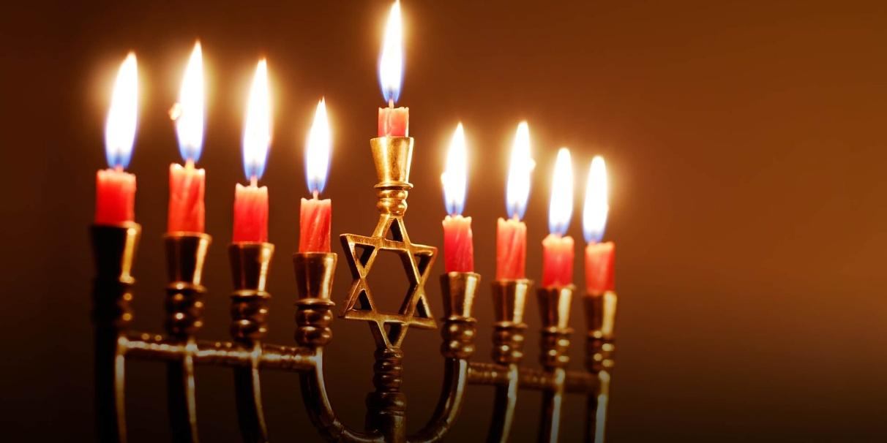
A cette occupation, au milieu de ses pensées, la semaine s’écoula. Le huitième jour arriva, et toutes les lumières brillaient, sans oublier même la neuvième – la servante fidèle – qui jusque-là, n’avait servi qu’à allumer les autres. Maintenant, une grande clarté rayonnait de la Ménorah. Les yeux des enfants rayonnaient.
Pour notre ami, s’évoquait là le symbole de l’embrasement de la nation. D’abord, une lumière solitaire, il fait noir encore, et la lumière unique a l’air triste. Puis, elle trouve un compagnon, puis un autre, et un autre encore. Les ténèbres doivent reculer. C’est auprès de la jeunesse, chez les pauvres, que s’allume d’abord la flamme, puis d’autres les rejoignent, tous ceux qui sont épris de Droit, de Vérité, de Liberté, tous ceux qui aiment le Progrès, l’Humanité, le Beau. Et lorsque, enfin, toutes les lumières sont unies en une clarté rayonnante, l’œuvre accomplie nous remplit d’admiration et de joie. Et nul poste ne donna plus de joie que celui de serviteur auprès de la Lumière ».
Théodor Herzl
1. Je renvoie sur ce sujet à mon livre Israël, le rêve inachevé, éditions de Paris/Max Chaleil 2018.
2. Voir G. Weisz, « Theodor Herzl, Une nouvelle lecture » - L’Harmattan 2006, p. 117.
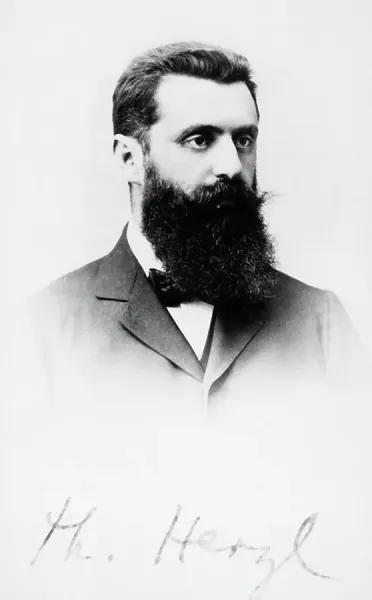
Au 19ème siècle, les Juifs ont commencé à bénéficier des tendances de l'émancipation dans les pays chrétiens, avec des droits civiques dont ils n'avaient jamais joui auparavant. Mais les Juifs des pays musulmans ont continué à vivre sous les lois de ‘dhimmi’ et n'ont jamais eu la garantie d'équité. En 1840, un cas a mis en lumière leur sort auprès du monde occidental: l'affaire de Damas (pour plus d'informations, cliquez ici sur mon autre site Web). Des voix s'élèvent dans les cercles juifs et chrétiens pour condamner l'injustice faite aux juifs en Orient. Et les Juifs des pays émancipés ont entrepris la mission d’aider leurs coreligionnaires. Cette mission a notamment conduit quelques années plus tard à la création de l'Alliance Israélite Universelle pour aider à éduquer les Juifs dans les pays musulmans. Mais, certains Chrétiens en Angleterre ont commencé à exprimer un nouveau paradigme: les Juifs devaient retourner dans leur terre ancestrale selon les prophéties, mais ce retour accélérerait la seconde venue de Jésus. Cette croyance était principalement basée sur le Nouveau Testament où Paul explique la doctrine sur les Juifs dans Romains 11: « Je demande alors: Dieu a-t-Il rejeté Son Peuple? Loin de là! Car moi aussi je suis Israélite, de la postérité d'Abraham, de la tribu de Benjamin. Dieu n'a point rejeté Son Peuple, qu'Il a connu d'avance. […] Encore une fois, je demande: Est-ce pour tomber qu'ils ont bronché? Loin de là! Mais, par leur chute, le Salut est devenu accessible aux Païens, pour rendre Israël jaloux. Or, si leur chute a été la richesse du monde, et leur amoindrissement la richesse des païens, combien plus en sera-t-il ainsi quand ils se convertiront tous. […] Car je ne veux pas, frères, que vous ignoriez ce mystère, afin que vous ne vous regardiez point comme sages, c'est qu'une partie d'Israël est tombée dans l'endurcissement, jusqu'à ce que la totalité des Païens soit entrée. Et ainsi tout Israël sera sauvé […] En ce qui concerne l'Évangile, ils sont ennemis à cause de vous; mais en ce qui concerne l'élection, ils sont aimés à cause de leurs pères. Car Dieu ne se repent pas de Ses dons et de Son appel. De même que vous avez autrefois désobéi à Dieu et que, par leur désobéissance, vous avez maintenant obtenu miséricorde, de même ils ont maintenant désobéi, afin que, par la miséricorde qui vous a été faite, ils obtiennent aussi miséricorde. Car Dieu a renfermé tous les hommes dans la désobéissance, pour faire miséricorde à tous ».
Fait intéressant, cette nouvelle approche a surtout pris son envol en Angleterre où les Juifs n’avaient pas encore été émancipés, contrairement à la plupart des pays européens, et ce jusqu'en 1858! À ce propos, Lord Shaftesbury écrivit en septembre 1838 dans son journal: L'ancienne cité du peuple de Dieu [les Juifs] est sur le point de reprendre une place parmi les nations, et l'Angleterre est le premier des royaumes des Gentils qui cesse de « la piétiner ».
En janvier 1839, un mémorandum, dont l'auteur semble avoir été Henry Innes, secrétaire de l'Amirauté, est adressé à toutes les « Puissances Protestantes du Nord de l'Europe et de l'Amérique » au sujet de « la Restauration des Juifs ». On prétendait que le pouvoir politique était nécessaire, comme Cyrus le Grand l'a fait autrefois, pour réaliser la prophétie des Écritures et restaurer les Juifs dans leur Patrie. Ce document important a été publié dans le Times et d'autres journaux, et avait été cité à maintes reprises par des dizaines d'ecclésiastiques de confession protestante, et signalait la nécessité de l'action politique pour atteindre le but ultime.
En 1840, Orson Hyde, un missionnaire qui fit plus tard du prosélytisme à Jérusalem, écrivit: C'est par le pouvoir et l'influence politiques que la nation juive fut détruite et ses sujets dispersés à l'étranger; et je hasarderai ici l'opinion que par le pouvoir et l'influence politiques, ils seront rassemblés et édifiés; et de plus que l'Angleterre est destinée, dans la sagesse et l'économie du Ciel, à tendre le bras du pouvoir politique et à s'avancer aux premiers rangs de cette glorieuse entreprise. Le Seigneur a une fois suscité un Cyrus pour restaurer les Juifs, mais ce n'était pas la preuve qu'Il possédait la religion des Perses. […] Il y a une inquiétude croissante en Europe pour la restauration de ce peuple [les Juifs]; et cette inquiétude n'est confinée au sein de quelque communauté religieuse, mais elle a trouvé son chemin jusqu'aux cours des rois.
Mais, à cette époque, la Terre d'Israël était sous la domination de l'Empire ottoman qui était allié aux puissances européennes. Peu ne pouvait être fait concrètement. Et donc, le sort des Juifs en terres d’Orient continuait tel quel.
Étonnamment, en France, la nation qui avait été la première en Europe à accorder l'émancipation à ses Juifs, les choses ont mal tourné pour eux lorsque l'affaire Dreyfus débuta. C'était un Juif assimilé qui était officier dans l'armée française mais, parce qu'il était juif et originaire de la partie germanophone de la France, il avait été piégé par certains hauts gradés de l'armée et accusé de trahison.
Lors de sa dégradation des titres militaires, le 5 janvier 1895 à Paris, un journaliste étranger de Vienne, également juif assimilé, était présent: Théodore Herzl. De cet événement, il réalisa que l'émancipation et l'assimilation n'aideraient pas les Juifs à être acceptés parmi les autres nations et que la seule solution pour eux serait d'avoir leur propre patrie où ils pourraient enfin trouver la liberté.
Quelques mois plus tard, en février 1896, Herzl publia son célèbre livre: Der Judenstaat (L'État juif). Il concluait comme suit: « Permettez-moi de répéter une fois de plus mes paroles d'ouverture: Les Juifs qui souhaitent un État finiront par l'avoir. Nous vivrons enfin en hommes libres sur notre propre terre et mourrons paisiblement dans nos propres maisons. Le monde sera libéré par notre liberté, enrichi par notre richesse, grandi par notre grandeur ».
Et ainsi, un Juif issu d'un milieu assimilé, qui n'avait aucune conviction religieuse, ni bonne opinion sur le Judaïsme a priori, se lança dans une mission personnelle qui remplira le reste de sa vie jusqu'à sa mort prématurée en 1904 à l'âge de 44 ans, pour créer l'élan qui conduira à un « État juif ».
À Vienne, Herzl fit la connaissance du révérend William Hechler (1845-1931) peu après la publication de son livre. Hechler était un pasteur qui avait auparavant effectué une mission à travers l'Europe en 1882 pour évaluer la situation des Juifs. En Russie, il a été particulièrement choqué d'apprendre la réalité des pogroms. À Odessa, il rencontra Léon Pinsker, un Juif russe qui le convainquit de la nécessité pour les Juifs d'avoir leur propre État afin d'éviter la haine et l'antisémitisme. Peu de temps après, Hechler publia en 1884 une brochure pour « la Restauration des Juifs en Palestine ».
Contrairement à d'autres pasteurs, il ne considérait pas leur conversion à la foi chrétienne comme une condition préalable. Au contraire, la priorité était leur retour sur la terre de leurs ancêtres pour permettre la seconde venue de Jésus. Et la sortie du livre d’Herzl résonna évidemment très bien chez Hechler, et ils se rencontrèrent à Vienne. Hechler fut très enthousiaste à aider Herzl de toutes les manières possibles. Comme il connaissait le Grand-Duc, qui était l’oncle et le mentor du Kaiser Guillaume II, il réussit à lui présenter Herzl ainsi qu'au Kaiser dans l'année 1896.
Le Kaiser promit de poursuivre l'idée d'établir une colonie juive en Palestine. Son motif était principalement politique, car il était impatient de rivaliser avec les autres nations européennes, l'Angleterre et la France, dans la poursuite des colonies et influences dans le monde. Aussi Herzl lui proposa l’idée d’établir une colonie juive de langue allemande en Terre Sainte. Les efforts d’Herzl commencèrent à porter leurs fruits bien que son idée d'un « État juif » ait rencontré l'opposition de nombreux Juifs, y compris des organismes religieux qui considéraient que seul le Messie devait accomplir cette prophétie divine de ramener Son Peuple dans leur Patrie.
Néanmoins, en 1897, il appela à une réunion des Juifs de toute l'Europe pour créer une organisation capable de soutenir l'initiative d'établir une présence juive en Terre Sainte: ce fut le premier Congrès sioniste qui eut lieu à Bâle, en Suisse, à la fin du mois d'août 1897. Plus tard cette année-là, Herzl écrivit dans son journal: « Si je devais résumer le Congrès de Bâle en un mot – que je me garderai de prononcer publiquement – ce serait ceci: À Bâle, j'ai fondé l'Etat juif. Si je le disais à haute voix aujourd'hui, je serais accueilli par un rire universel. Dans cinq ans peut- être, et dans cinquante ans certainement, tout le monde s'en apercevra ». Et en effet, un État pour les Juifs a été officiellement voté par l'ONU cinquante ans plus tard…
Pendant ce temps, à l'époque d'Herzl, le Kaiser devait se rendre en Palestine en 1898 afin d'inaugurer la fondation de l'Église du Rédempteur à Jérusalem. Il demanda à Herzl de le rencontrer là-bas pour discuter plus en avant de l'initiative « sioniste ».
Rencontre à Mikveh Israël
Herzl et une poignée de représentants sionistes se rendirent en Terre Sainte en octobre 1898. Ils débarquèrent à Jaffa le mercredi 26 octobre 1898. Ils y apprirent que le Kaiser allait arriver à Haïfa, après qu'il ait décidé d'amarrer son navire devant le port allemand de la colonie de Templiers, là-bas. Puis il devait se rendre à Jaffa, où une autre colonie de Templiers allemands devait l'accueillir. De là, le plan était de visiter l'école agricole de Mikveh Israel, non loin de Jaffa, avant de se diriger vers Jérusalem. Herzl est arrivé à cette école le 26 et y a passé une nuit à attendre le Kaiser. Le lendemain, un des délégués sionistes, David Wolffsohn, apporta un appareil photo pour immortaliser la rencontre entre les deux hommes.
Mikveh Israel (signifie "Espoir d'Israël" en hébreu) était une école créée par l'organisation française « Alliance » en 1870. Son objectif était d'instruire les élèves juifs et arabes sur les méthodes agricoles. Elle fonctionna plus ou moins pendant 50 ans jusqu'à la création de l'État d'Israël. Herzl espérait que le Kaiser verrait en l'école un exemple réussi d'apprentissage et de mise en œuvre agricoles dirigés par les Juifs.
Le Kaiser arriva à cheval le 27. Il reconnut Herzl de loin et chevaucha jusqu'à lui. Il lui fit part de ses impressions de ce qu'il avait vu jusqu'ici: C'est une terre qui avait un avenir. Alors que Herzl se tenait devant lui, Wolffsohn pris quelques clichés. Hélas, il n'avait pas cadré correctement: Herzl a été complètement coupé et le cheval blanc du Kaiser aussi. De retour à Jaffa, Wolffsohn décida d'organiser une photo séparée de Herzl, et de faire un photo-montage avec le cheval noir de l'aide de camp du Kaiser, et avec la tête du Kaiser penchée vers Herzl. Après quelques heures de travail acharné, Wolffsohn a obtenu la photo historique qu'il cherchait…
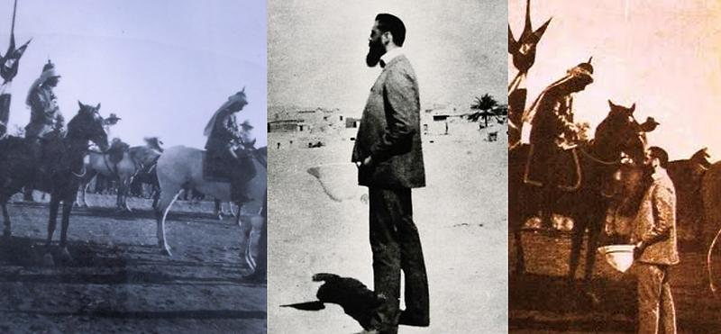
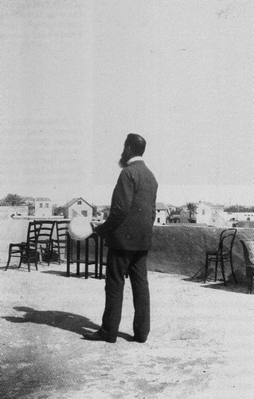
Le Kaiser ne s'est pas arrêté longtemps à Mikveh Israël après avoir appris que l'école était en fait gérée par une organisation française! La France et l'Allemagne étaient déjà en désaccord sur le contrôle des colonies en Afrique.
Tandis que le Kaiser poursuivait sa route vers Jérusalem, Herzl passa le reste de la journée à visiter d'autres « colonies de Juda » (Moshavot Yehuda).
Il se dirigea d'abord vers Rishon-le-Sion, ce qui signifie le Premier à Sion parce qu'ils prétendaient s'être installés les premiers en Terre d'Israël. Mais des problèmes financiers poussèrent ses premiers colons à rechercher le patronage du baron de Rothschild, qui a en effet aidé de nombreuses premières colonies juives (celles de ladite Première Aliyah). Rothschild aida à transformer Rishon-le-Zion en un village viticole, mais un commissaire nommé par lui gérait la colonie.
Herzl nota dans son journal: « Après une visite plutôt décevante à Rishon, Herzl a été enchanté par sa prochaine visite à Ness Ziona. La colonie y était une propriété privée (pas de patronage du Baron) et a commencé quand un juif d'Odessa, appelé Reuben Lehrer, est venu ici en 1883 et a acheté un terrain près du village arabe de Wadi ‘Hanin. Plus tard, à partir de 1891, plusieurs autres Juifs se sont installés près de lui et ont fusionné la colonie en une seule qu'ils ont appelée Ness Ziona (le Miracle de Sion) ».
Herzl a noté : « Là, nous avons été accueillis par toute la population; avec des chants d’enfants; un vieil homme [Lehrer] m'a offert du pain, du sel et du vin de sa propre vigne; J'ai dû visiter presque toutes les maisons des colons ».
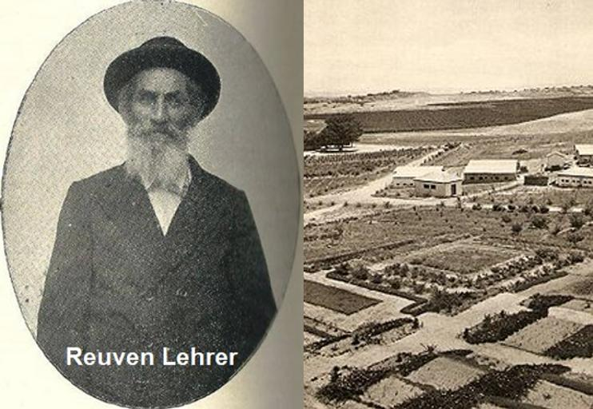
Lorsqu'ils quittèrent Ness Ziona, la délégation sioniste rencontra une « cavalcade » qui les supplia de visiter également leur colonie, à Rehovot. Le village avait été fondé en 1890 par les premiers pionniers qui ne souhaitaient pas être sous le patronage de Rothschild. Le nom Rehovot signifie « l'élargissement » d'après Genèse 26: 22: « Car maintenant l'Éternel nous a fait de la place (élargie) ».
La visite là-bas fit une impression durable sur Herzl qui a vu sa vision de ce que devrait être une nation juive: « Une cavalcade est venue au galop vers nous depuis la colonie de Rehovot. Une vingtaine de jeunes gens qui faisaient une sorte de « fantasia », chantant avec vivacité des chansons hébraïques et grouillant autour de notre voiture. [Nous] avions les larmes aux yeux quand nous avons vu ces flottes, ces audacieux cavaliers en qui nos jeunes vendeurs de pantalons peuvent se transformer.
Hedad! ils ont pleuré, et se sont précipités à travers le pays sur leurs petits chevaux arabes. […] A Rehovot, manifestation encore plus grande: tout le village m'attendait en rang et en file. Les enfants ont chanté. Avec les ressources de pauvres, un accueil princier ».
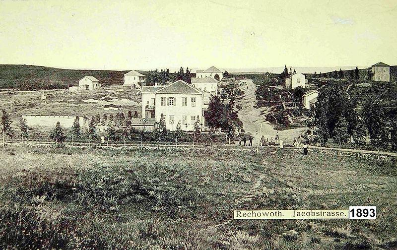
Voyage à Jérusalem
Après cette journée éclairante, ils retournèrent à Jaffa pour la nuit. Le plan était de se rendre le lendemain, le 28 octobre, à Jérusalem en train. La ligne ferroviaire avait récemment ouvert en 1892 et c'était le premier chemin de fer au Moyen-Orient. Mais tout ne se passa pas comme prévu, car Wolffsohn voulait rectifier la photo qu'il avait prise à Mikveh Israel.
La matinée fut ainsi consacrée au traitement de cette affaire, de sorte que le groupe ne prit le train que plus tard dans la journée, qui était un vendredi, et arriva à Jérusalem après le début du Chabbat… Cela provoqua un malaise au sein de la communauté juive de la Ville Sainte, qui s’ajoutait au fait que les chefs religieux, en général, étaient négatifs envers le sionisme. Le groupe passa la nuit du vendredi dans un hôtel qu'ils avaient réservé.
Jérusalem
Herzl se rendit compte que les dirigeants juifs locaux craignaient de mettre en colère les autorités turques s'ils montraient un quelconque soutien ou intérêt envers Herzl, le parrain d'un « État juif » en Terre Sainte. Et le monde venait d’apprendre les premiers massacres de populations arméniennes, chrétiennes, approuvés par le sultan Abdul-Hamid II vers 1895. En fait, même Herzl lui-même s'attendait à être arrêté à tout moment et expulsé de Terre Sainte, voire pire.
En attendant un entretien avec le Kaiser, de plus en plus incertain en raison du calendrier serré de la visite officielle, Herzl et ses compagnons parcoururent la Vieille Ville, comme le feraient aujourd'hui les touristes modernes: le Mur des Lamentations, la Via Dolorosa, le Saint-Sépulcre, la Tour de David. Du haut d'une ancienne synagogue (peut-être la ‘Hurva), il regarda le Mont du Temple et le Mont des Oliviers.
Le lundi 31 octobre, le Kaiser assista à la consécration de l'église du Rédempteur, motif officiel de son voyage en Terre Sainte. Mais le timing tourna mal pour les délégués sionistes: le Kaiser devait quitter la Terre Sainte deux jours plus tard et aucune entrevue ne semblait désormais possible pour Herzl. Dans la même journée, Wolffsohn se rendit de temps en temps au campement allemand (qui se trouvait dans l'actuelle rue Ha-Nev'im à Jérusalem) pour venir aux nouvelles. Herzl put finalement obtenir la réponse que le Kaiser le rencontrera le lendemain ou le surlendemain. L'optimisme est de nouveau remonté.
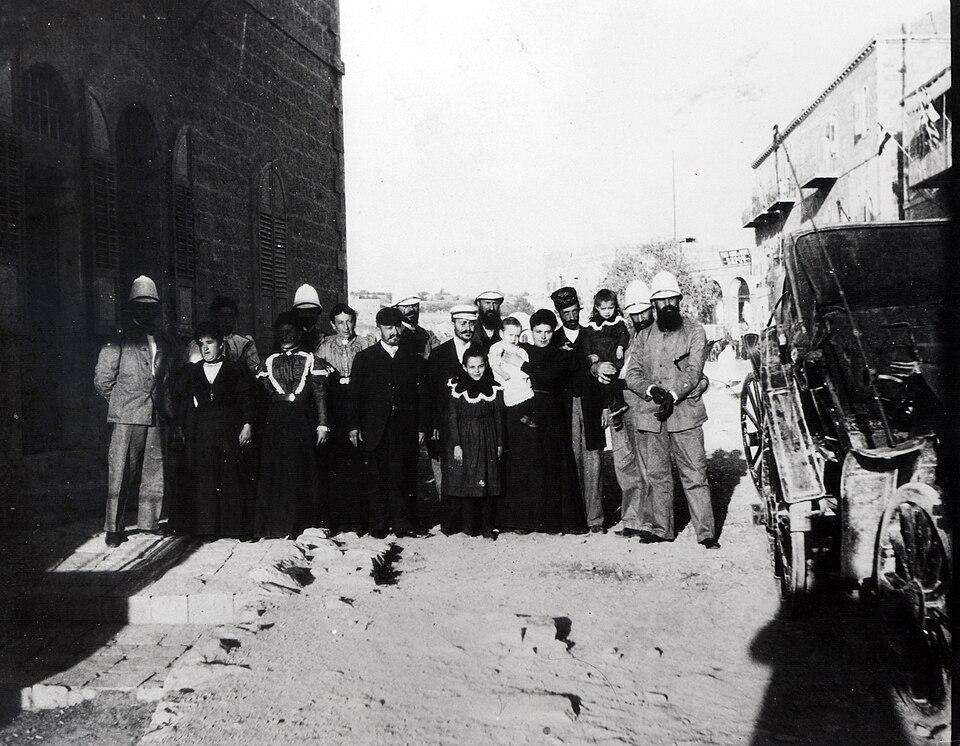
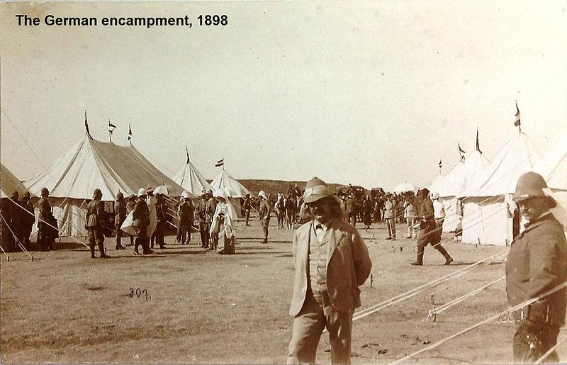
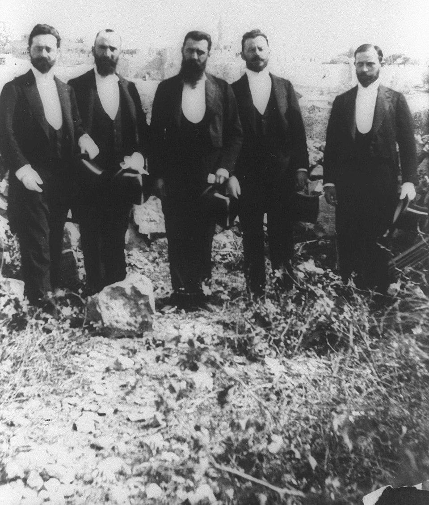
Herzl rencontre Guillaume II
Enfin, un rendez-vous fut fixé pour le mercredi. Les délégués sionistes durent donc attendre encore un peu. Pendant ce temps, ils continuèrent à visiter des sites de la ville, dont le mont des Oliviers et aussi le Tombeau des Rois pour lequel Herzl nota correctement qu'il appartenait à un Juif français, Péreire, qui fut obligé par les autorités turques de le céder au gouvernement français, parce que les lois ottomanes n'autorisaient pas les Juifs à posséder quoi que ce soit en dehors de quelques lieux précis réservés à leur communauté.
Enfin l'audience eut lieu comme prévu, le 2 novembre 1898, vers midi. Le Kaiser fut très affable envers Herzl. Après que le dirigeant sioniste ait lu sa communication préparée, le Kaiser répondit que la question nécessitait plus d'étude et de discussion, que la terre avait désespérément besoin d'ombre [d'arbres] et d'eau, et il conclut que le mouvement [sioniste] de Herzl contenait une idée valide. La nécessité d'une solution à l'eau a été soulignée à plusieurs reprises dans cette conversation.
Au total, l'audience fut plutôt courte et Herzl déclara à ses autres compagnons que le Kaiser n'avait dit ni oui ni non. Herzl considéra donc que sa mission d'obtenir le patronage du Kaiser avait échoué.
Motza
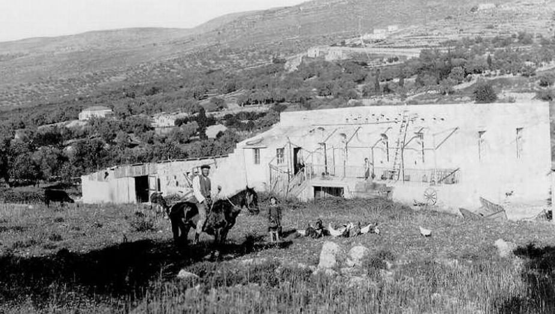
Après l'audience, les délégués se rendirent à Motza, une petite colonie fondée en 1854 par un Juif de Jérusalem. Lorsque Herzl visita le village, il y avait quelque 200 habitants qui réussirent à cultiver un sol très infertile. Là, Herzl planta un jeune cyprès qui survécut jusqu'à la Première Guerre mondiale, jusqu’au moment où les Turcs abattirent la plupart des arbres de Terre Sainte afin d'alimenter leurs locomotives à vapeur et de transporter leur effort de guerre sur le front sud contre les forces britanniques.
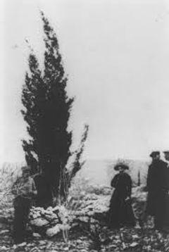
Départ précipité de Terre Sainte
Le lendemain, jeudi 3 novembre, les délégués prirent un train de bonne heure pour Jaffa. Herzl avait hâte de quitter la Terre Sainte avant que les autorités turques ne finissent par l'arrêter. De nouveaux retards les obligèrent cependant à passer une nuit supplémentaire à Jaffa, où Herzl se sentit entouré d'espions. Mais ils purent finalement partir en bateau le vendredi 4 novembre, cette fois avant Chabbat!
Ainsi, au total, la visite de Herzl en Terre Sainte a duré 10 jours au cours desquels il a visité 7 communautés de Juifs, de différentes périodes de peuplement: Jaffa, Mikveh Israël, Ness Ziona, Jérusalem et Motza ont toutes été établies avant la soi-disant « Première » Aliyah qui a commencé en 1882, tandis que Rishon-le-Zion et Rehovot dataient de cette première Aliyah.
Conséquences.
Herzl estima que la rencontre tant attendue avec le Kaiser avait échoué. Le problème était que le Kaizer avait soulevé la proposition au Sultan lorsqu'il l'avait rencontré à Istanbul, avant son arrivée en Terre Sainte, mais le Sultan avait catégoriquement refusé de permettre aux Juifs, et uniquement aux Juifs, de s'installer sur place.
Mais une personne suivait l'affaire de près: le révérend Hechler. À cette époque, il travaillait comme aumônier à l'ambassade britannique à Vienne et avait aussi un parent britannique. L'échec de l'initiative allemande lui donna l'opportunité d'en lancer une autre, britannique cette fois… Et parce que l'idée avait déjà mûri dans l'esprit des principaux politiciens britanniques, qui partageaient la même conviction religieuse que Hechler, cette nouvelle initiative fit des progrès.
Le même jour, 19 ans après la rencontre Herzl-Guillaume, Lord Balfour donna la fameuse « Déclaration » aux dirigeants juifs de Grande-Bretagne le 2 novembre [1917].
Comme l'Histoire le sait maintenant, la Déclaration Balfour a favorisé l'établissement d'une nation juive en Terre Sainte. Et, parce que les nations arabes la rejetèrent, ainsi que d'autres propositions ou compromis pour partager cette terre, cela a finalement ouvert la voie à un vote à l'ONU pour établir des États arabes et juifs indépendants et séparés.
(@) Albert Benhamou, février 2019
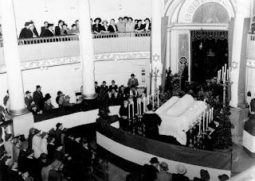
Il y a cent ans, le 4 juillet 1904, des milliers de personnes remplies d'émotion dévouée assistaient, dans les rues de Vienne, aux funérailles d'un jeune homme de 44 ans, Theodor Herzl, avocat, journaliste, dramaturge et homme d'État, bien que n'avait jamais dirigé un État.
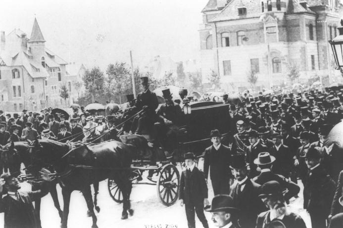
Un mois plus tôt, il avait été admis au sanatorium autrichien d'Edlach, déprimé et affaibli. Les médecins n'ont pas immédiatement posé de diagnostic, mais le 1er juillet, le patient présentait un tableau clair de pneumonie. Le lendemain, il reçut la visite d'un ami, le révérend William Hechler, aumônier de l'ambassade d'Angleterre à Vienne, à qui il dit: « Envoyez vos salutations à la Palestine, pour moi. J'ai donné mon cœur et mon sang pour mon peuple ».
Le 3 juillet à cinq heures de l'après-midi, Theodor Herzl part pour l'éternité. Le mouvement sioniste naissant s’est retrouvé dans un état d’orphelinat et de perplexité. Des milliers de télégrammes, venant du monde entier, de juifs et de non-juifs, furent adressés à sa famille.
À ce moment-là, à des milliers de kilomètres de là, dans la petite ville polonaise de Plonsk, un garçon de 18 ans nommé David Green écrivait à un ami: « Quelle perte terrible. Mais aujourd'hui, plus que jamais, je sais que nous allons triomphe. Je sais que le jour viendra - et ce jour n'est pas loin - où nous retournerons dans notre pays merveilleux, le pays de la vérité et de la poésie, le pays des roses et des visions prophétiques ». Quelques années plus tard, cet adolescent changera son nom de David Green à David Ben Gourion.
Dans l'un de ses écrits, Herzl avait demandé à être enterré dans un cercueil métallique, à côté de son père, « jusqu'au jour où le peuple juif emmènera ma dépouille en Palestine ». C’est avec des sentiments mêlés de joie et de tristesse qu’en 1949 sa demande fut exaucée. Il repose au sommet du mont Herzl, d’où s’ouvre l’une des plus belles vues de Jérusalem. Cependant, son corps n’a pas été transporté en Palestine, mais dans le nouvel État d’Israël, la nation indépendante et souveraine, germée et animée par son action et sa vision.
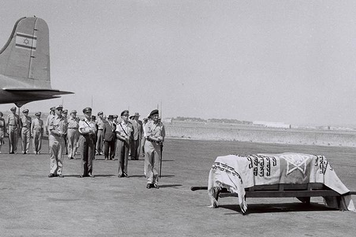
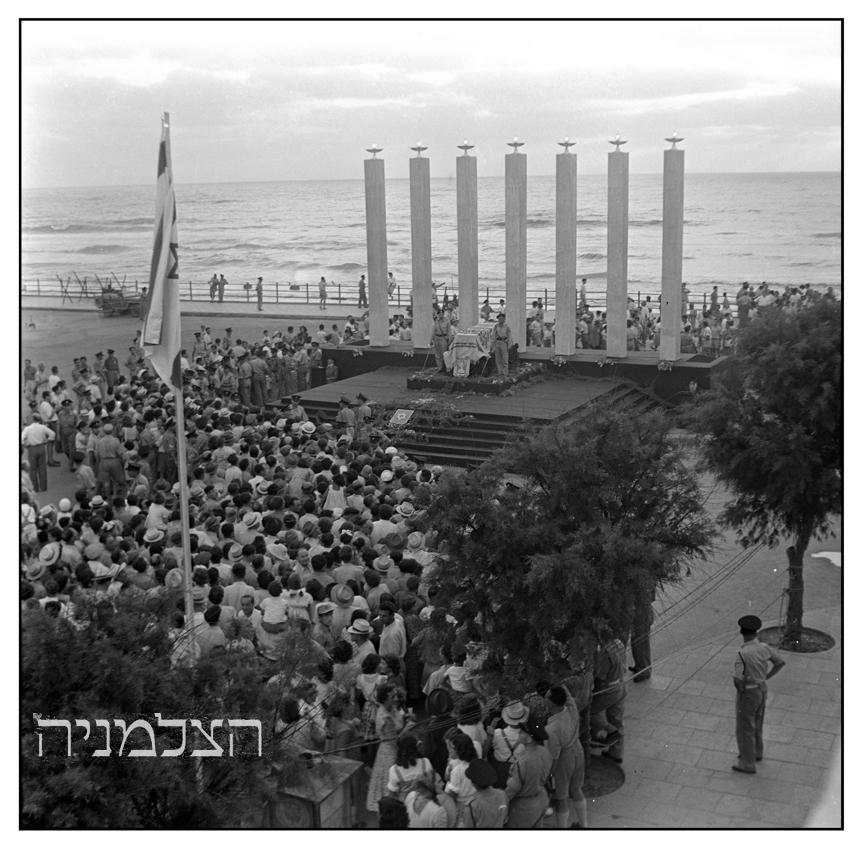
Le cercueil de Herzl a été placé pendant 12 heures sur une plate-forme surélevée avec sept piliers sur la place Herbert Samuel
au bout de la rue Allenby à Tel Aviv. Des milliers de personnes se sont rendues sur le site jour et nuit.
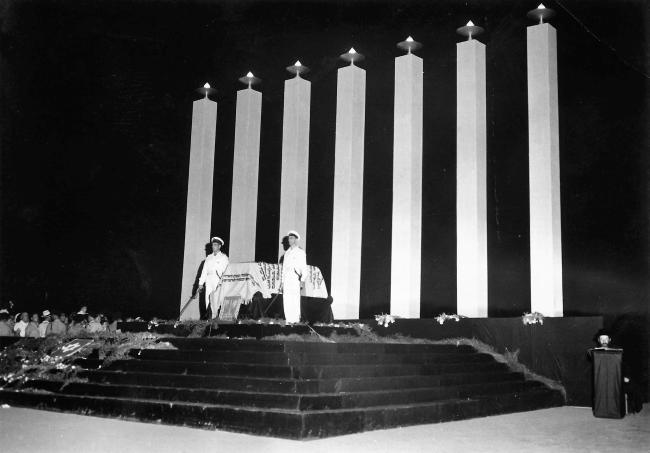
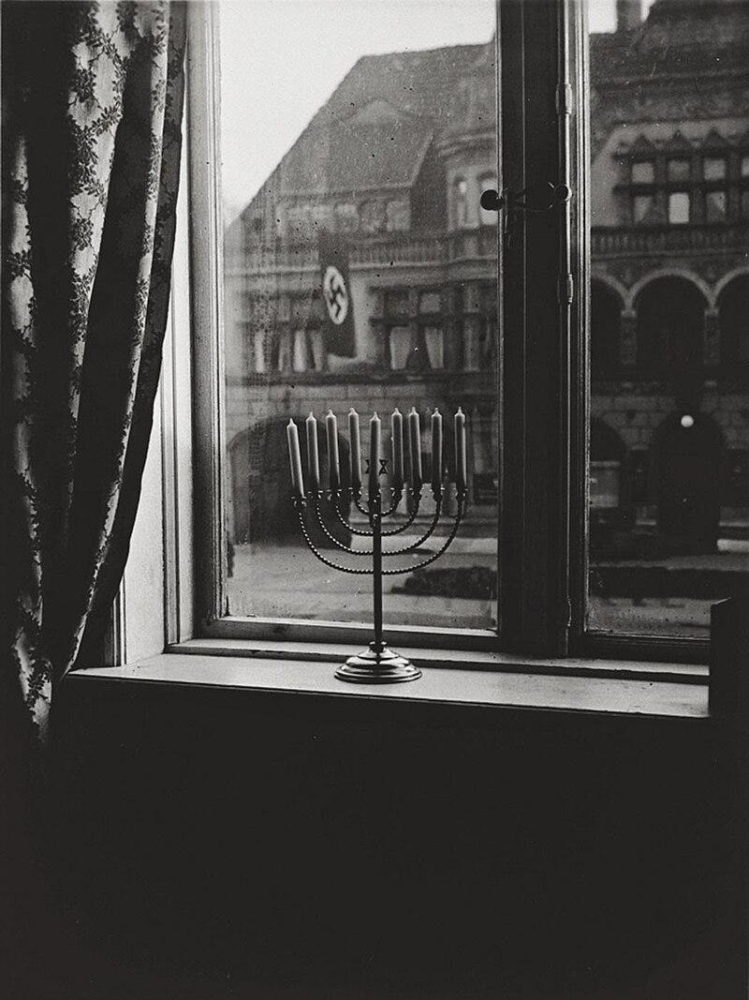
Suivant l'avis de Hillel l'Ancien, le luminaire de Hanoucca, portant huit lumières pour marquer le huitième jour de la fête, est placé près d'une fenêtre. Sur cette photographie de Rachel Posner en 1931, la fenêtre et la hanoukkia d’Akiva Boruch Posner, rabbin de la communauté juive de Kiel, fait face au quartier général nazi de cette ville, avant que ceux-ci ne prennent le pouvoir en 1933.
Au dos de la photo est écrit: « Que Juda crève! » dit le drapeau –– « Juda vit éternellement! » lui répond la Lumière.